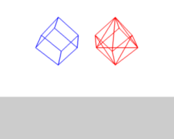
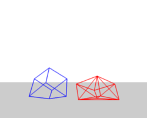
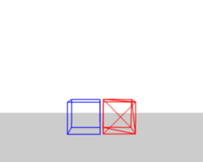
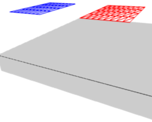

Interior¶
In between each neighboring vertex of a mesh, you typically create edges to connect them. Imagine each edge as a spring. Any mechanical spring is able to stretch under tension, and to squeeze under pressure. All springs have an ideal length, and a stiffness that limits how far you can stretch or squeeze the spring.
In Blender’s case, the ideal length is the original edge length which you designed as a part of your mesh, even before you enable the Soft Body system. Until you add the Soft Body physics, all springs are assumed to be perfectly stiff: no stretch and no squeeze.
You can adjust the stiffness of all those edge springs, allowing your mesh to sag, to bend, to flutter in the breeze, or to puddle up on the ground.
To create a connection between the vertices of a soft body object there have to be forces that hold the vertices together. These forces are effective along the edges in a mesh, the connections between the vertices. The forces act like a spring. Fig. Vertices and forces along their connection edges. illustrates how a 3×3 grid of vertices (a mesh plane in Blender) are connected in a soft body simulation.

Vertices and forces along their connection edges. |

Additional forces with Stiff Quads enabled. |
But two vertices could freely rotate if you do not create additional edges between them. The logical method to keep a body from collapsing would be to create additional edges between the vertices. This works pretty well, but would change your mesh topology drastically.
Luckily, Blender allows to define additional virtual connections. On one hand you can define virtual connections between the diagonal edges of a quad face (Stiff Quads Fig. Additional forces with Stiff Quads enabled.), on the other hand you can define virtual connections between a vertex and any vertices connected to its neighbors’ Bending Stiffness. In other words, the amount of bend that is allowed between a vertex and any other vertex that is separated by two edge connections.
Settings¶
The characteristics of edges are set with the Springs and Stiff Quads properties in the Soft Body Edges panel. See the Soft Body Edges settings for details.
Tips: Preventing Collapse¶
Stiff Quads¶
To show the effect of the different edge settings we will use two cubes (blue: only quads, red: only tris) and let them fall without any goal onto a plane (how to set up collision is shown on the page Collisions). See the example blend-file.

Frame 1. |

Frame 36. |

Frame 401. |
{kind=link}
In Fig. Without Stiff Quads., the default settings are used (without Stiff Quads). The “quad only” cube will collapse completely, the cube composed of tris keeps its shape, though it will deform temporarily because of the forces created during collision.

Frame 36. |

Frame 401. |
{kind=link}
{kind=link}
In Fig. With Stiff Quads., Stiff Quads is activated (for both cubes). Both cubes keep their shape, there is no difference for the red cube, because it has no quads anyway.
Bending Stiffness¶
The second method to stop an object from collapsing is to change its Bending stiffness. This includes the diagonal edges (damping also applies to these connections).

Frame 36. |

Frame 401. |
In Fig. Bending Stiffness., Bending is activated with a strength setting of 1. Now both cubes are more rigid.

Two planes going to collide. |

No bending stiffness. |

High bending stiffness (10). |
{kind=link}
Bending stiffness can also be used if you want to make a subdivided plane more plank like. Without Bending the faces can freely rotate against each other like hinges Fig. No bending stiffness.. There would be no change in the simulation if you activated Stiff Quads, because the faces are not deformed at all in this example.
Bending stiffness is the strength needed for the plane to be deformed.